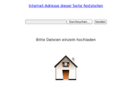

Instant Webserver
Dieser Artikel wurde für die folgenden Ubuntu-Versionen getestet:
Ubuntu 16.04 Xenial Xerus
Ubuntu 14.04 Trusty Tahr
Zum Verständnis dieses Artikels sind folgende Seiten hilfreich:
Einen Editor öffnen, optional
Installation von Programmen, optional
 Einen „echten“ Webserver installieren, konfigurieren und pflegen kann in Arbeit ausarten – insbesondere, wenn er öffentlich zugänglich ist. Viel praktischer wäre ein temporärer Webserver, der sich nur bei Bedarf genauso schnell starten wie beenden lässt. Dies ist kein Problem mit den folgenden Programmen. Eine Zielgruppe sind z.B. Webentwickler, die statische HTML-Seiten auf dem eigenen Rechner testen möchten. Eine andere sind Anwender, die schnell Daten zwischen zwei oder mehreren Rechnern im Heimnetzwerk austauschen wollen.
Einen „echten“ Webserver installieren, konfigurieren und pflegen kann in Arbeit ausarten – insbesondere, wenn er öffentlich zugänglich ist. Viel praktischer wäre ein temporärer Webserver, der sich nur bei Bedarf genauso schnell starten wie beenden lässt. Dies ist kein Problem mit den folgenden Programmen. Eine Zielgruppe sind z.B. Webentwickler, die statische HTML-Seiten auf dem eigenen Rechner testen möchten. Eine andere sind Anwender, die schnell Daten zwischen zwei oder mehreren Rechnern im Heimnetzwerk austauschen wollen.
Allerdings sollte unbedingt berücksichtigt werden, dass die genannten Programme ausschließlich zum vorübergehenden Einsatz in einem lokalen Netzwerk (LAN) gedacht sind. Der jeweilige Ordner wird in der Regel rekursiv freigegeben, ist also inklusive aller Unterordner und versteckter Dateien im Netzwerk sichtbar. Wenn der Rechner oder das LAN nicht über spezielle Firewall-Regeln abgesichert sind, stehen unter Umständen persönliche Daten vollkommen ungeschützt im Internet.
Für den Zugriff von einem anderen Rechner reicht ein beliebiger Webbrowser aus. Um die vorgestellten Programme (bis auf woof und webfs) wieder zu beenden, reicht ein
Strg +
C auf der Kommandozeile [1]. Die Port-Nummer und der Ordnername sind jeweils frei wählbar. Die hier verwendeten Ports 8081 - 8086, der Ordner ~/Downloads und localhost (muss praktisch durch die IP-Adresse des Server-Rechners ersetzt werden) dienen nur als Beispiel.
Achtung!
Alle genannten Programme bieten keinerlei Zugriffsschutz und sollten daher nicht dauerhaft zum Einsatz kommen (einzige Ausnahme ist hier Meiga). Darüber hinaus sind sie kein Ersatz für einen LAMP-Server.
Programme¶
In den folgenden Beispielen ist der Ordner ~/Downloads (alias /home/BENUTZERNAME/Downloads) das Stammverzeichnis ("document root") des Webservers.
Jibble¶
Der auf Java basierende und damit plattformübergreifend einsetzbare Webserver Jibble  bietet neben den Grundfunktionen ein sonst nur von vollwertigen Webservern bekanntes Merkmal: SSI (Server Side Includes). Auch die eingebaute Unterstützung verschiedener MIME-Typen ist praktisch. Eine Upload-Möglichkeit ist nicht vorhanden. Beispiel:
bietet neben den Grundfunktionen ein sonst nur von vollwertigen Webservern bekanntes Merkmal: SSI (Server Side Includes). Auch die eingebaute Unterstützung verschiedener MIME-Typen ist praktisch. Eine Upload-Möglichkeit ist nicht vorhanden. Beispiel:
java -jar WebServerLite.jar ~/Downloads 8081
Der Webserver ist über http://localhost:8081/ zu erreichen.
Python¶
Ohne Zusatzprogramme und damit noch einfacher in der Handhabung ist der in Python enthaltene SimpleHTTPServer . Python ist in allen Ubuntu-Varianten in der Standardinstallation enthalten, die jeweils vorhandene Version zeigt der Befehl:
python --version
Beispiele:
Python 2.x:
cd ~/Downloads && python -m SimpleHTTPServer 8082
Python 3.x:
cd ~/Downloads && python3 -m http.server 8082
Der Webserver ist jeweils über http://localhost:8082/ zu erreichen. Eine Upload-Möglichkeit ist nicht vorhanden.
|  |
| Upload mit Droopy |
Droopy¶
Bisher fehlt die Möglichkeit, Dateien hochzuladen. Mit dem ebenfalls in Python programmierten Droopy können einzelne Dateien bequem hochgeladen werden. Es ist ab Ubuntu 14.04 in den offiziellen Paketquellen enthalten. Folgendes Paket muss installiert [3] werden:
droopy (universe)
 mit apturl
mit apturl
Paketliste zum Kopieren:
sudo apt-get install droopy
sudo aptitude install droopy
Nett ist die Möglichkeit, die Upload-Seite mit einem Bild zu verschönern. Beispiel:
python droopy.py -m "Einzelne Dateien hochladen" -d ~/Downloads 8083 -p ~/Bilder/bild.jpg
Der Webserver ist über http://localhost:8083/ zu erreichen. Weitere Informationen liefert der Befehl:
python droopy.py -h
Eine Download-Möglichkeit kann man mit der Option --dl aktivieren.
SimpleHTTPServerWithUpload¶
Das folgende Skript ist eine Alternative zu Droopy und stammt von bones7456  . Im Gegensatz zu Droopy sind hier Up- und Downloads ohne die Angabe einer zusätzlichen Option möglich. Den Quellcode gibt es hier: SimpleHTTPServerWithUpload.py
. Im Gegensatz zu Droopy sind hier Up- und Downloads ohne die Angabe einer zusätzlichen Option möglich. Den Quellcode gibt es hier: SimpleHTTPServerWithUpload.py  . Beispiel:
. Beispiel:
cd ~/Downloads && python SimpleHTTPServerWithUpload.py 8084
Der Webserver ist über http://localhost:8084/ zu erreichen.
SimpleAuthServer¶
Möchte man ein Kennwort für den Zugriff nutzen, so kann man das Skript SimpleAuthServer verwenden. Man bedenke aber, dass die Authentifizierung nur den Verbindungsaufbau absichert, aber die übertragenen Daten nicht verschlüsselt. Ähnlich wie bei FTP-Übertragungen kann also jeder die übertragenen Dateien inkl. des Kennworts mitlesen, da nur HTTP und nicht HTTPS genutzt wird. Echtes HTTPS bietet erst SimpleAuthServerSSL .
cd ~/Downloads && python SimpleAuthServer.py 8085 Benutzername:Passwort
Der Webserver ist über http://localhost:8085/ zu erreichen.
webfs¶
webfs ist ein kleiner Webserver für statische Webseiten, der in den offiziellen Paketquellen enthalten ist. Folgendes Paket muss installiert [3] werden:
webfs (universe)
mit apturl
Paketliste zum Kopieren:
sudo apt-get install webfs
sudo aptitude install webfs
Die Konfiguration erfolgt über die Datei /etc/webfsd.conf. Weitere Hilfe bietet die Manpage zu webfsd. Informationen zur Steuerung des Dienstes liefert der Befehl:
sudo /etc/init.d/webfs
Weitere Möglichkeiten¶
Steht das Interesse am Versenden oder Empfangen von Dateien im Vordergrund, sind die folgenden Programme eine Alternative zu den oben genannten.
Kangee¶
Das auf Java basierende Programm ermöglicht einen Dateiaustausch im Stil von One-Click-Hostern über den eigenen Rechner. Technisch gesehen ein HTTP-Fileserver, ermöglicht das Programm dem Benutzer, eine Datei in das Programmfenster zu ziehen, und liefert eine URL zurück. Diese kann nun beispielsweise über Instant Messenger oder im Facebook Chat (der keinen Dateiaustausch erlaubt) an andere Personen versendet werden. Mehr Details im Artikel zu Kangee.
Meiga¶
Dieses noch junge Projekt hat sich zum Ziel gesetzt, das einfache Freigeben von Verzeichnissen über das Web zu ermöglichen. Im Gegensatz zu den bisher genannten Programmen kann der Zugriff bei Bedarf zum einen mit einem Kennwort eingeschränkt werden und zum anderen verschlüsselt erfolgen. Weitere Informationen im Artikel Meiga.
woof¶
Ein weiteres Python-Skript ist woof , das ab Ubuntu 11.04 in den offiziellen Paketquellen enthalten ist:
woof (universe)
mit apturl
Paketliste zum Kopieren:
sudo apt-get install woof
sudo aptitude install woof
Es eignet sich für einzelne Dateien oder ganze Ordner, wobei letztere automatisch gepackt werden. Als Besonderheit ist ein Zähler vorhanden, mit dem sich die Anzahl der gleichzeitigen Ladevorgänge ("downloads") begrenzen lässt (Standard: 1x herunterladen). Beispiel:
python woof -p 8086 ~/Downloads/Dateiname
Der Webserver ist über http://localhost:8086/ zu erreichen und liefert Dateiname aus. Anschließend beendet sich das Programm automatisch. Eine Upload-Möglichkeit (ebenfalls mit Zähler) ist vorhanden. Weitere Informationen liefert der Befehl:
python woof -h
HFS¶
Der HTTP File Server ist ursprünglich für Windows geschrieben worden, lässt sich aber über Wine auch unter Ubuntu ausführen. Verwaltet wird der Server über eine integrierte grafische Benutzeroberfläche. Standardmäßig ist er über http://localhost:8080/ zu erreichen, ist aber auch anders konfigurierbar. Interessant sind die Upload-Möglichkeit sowie die Verwaltung von Benutzern.
Links¶
Sicherer Ad-hoc Server mit Python 3
 - Blogbeitrag, 01/2017
- Blogbeitrag, 01/2017Webserver als Shell-Einzeiler
- heise Open Source, 08/2013Droopy – Datenübertragung per HTTP
- Blogeintrag 12/2010Simple Http Server support uploading files from Windows in Ubuntu
- Blogeintrag, 05/2010Ein kleiner Webserver mit Python 2
- Blogeintrag, 04/2010Really Simple HTTP Server with Python 2
- Python nur auf localhoststarten, Artikel LinuxJournal, 09/2009
- Erstellt mit Inyoka
-
 2004 – 2017 ubuntuusers.de • Einige Rechte vorbehalten
2004 – 2017 ubuntuusers.de • Einige Rechte vorbehalten
Lizenz • Kontakt • Datenschutz • Impressum • Serverstatus -
Serverhousing gespendet von